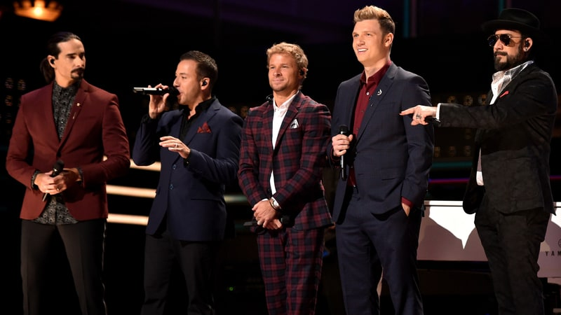
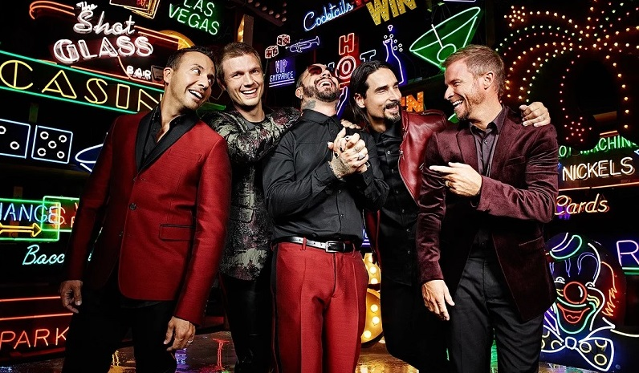

News
Backstreet Boys confirm 2018 world tour
This time, the gang's making their way around the world to celebrate 25 years together. If you recall, the Backstreet Boys formed in 1993 in Orlando. That's a long time! Heck, they've been around since the first Beanie Babies were launched! They also rumored to be working on a new album! As for now, the band's been on tour in Las Vegas since March performing at The AXIS At Planet Hollywood. This tour has been extended and tickets are now on sale for shows that will take place November through February. The stars dominated Billboard's Hot 100 Chart back in the day, so who's to say they can't do it again? They quickly rose to fame with their hit albums, "Millenium" and "Backstreet's Back" albums. There's no denying that the Grammy-nominated band seized every girl's hearts from the get-go. C'mon! You can't deny you had "I'll Never Break Your Heart" and "Show Me The Meaning Of Being Lonely" on repeat!
Backstreet Boys Talk Exploring Country Sounds on New Album
Over the past two years, the Backstreet Boys have made what, at first glance, seemed like an unlikely foray into country music. But they soon discovered an audience that was similar – and in some cases exactly the same – to the massive crowds they drew during their reign in the late Nineties and early 2000s. Next year they'll look to capitalize on that reality with a new album, which the band says will have some country influence. "When news came out we were collaborating with FGL, my Twitter feed and Facebook feed was all fans commenting 'Oh my god, my two favorite groups are collaborating,'" said Kevin Richardson, speaking on the red carpet at the CMT Artists of the Year Special, where they honored Florida Georgia Line by singing "H.O.L.Y." "It reminded me in a way of when we were a little younger," added Nick Carter. Through their association with Florida Georgia Line, Backstreet performed on the ACM Awards in April, co-headlined stadiums with the genre-defying duo this summer and scored their first country Number One in July with FGL's "God, Your Mama, and Me," which borrowed heavily from the quintet's lush pop stylings. As a result, country music is said to have a place on their upcoming their tenth studio album. Part of the recording is even happening in Nashville. "Yes, there's a couple of tracks," said AJ McLean when asked if the project would have country moments. "We cut some Nashville songs recently, and just yesterday I was in the vocal booth," added Richardson. "So we're in the lab playing around, experimenting." According to the band, some of their favorite Nashville songwriters include members of country's new guard – artists like Chris Stapleton and Sam Hunt, plus tunesmiths like Brett Tyler (Maren Morris' "Sugar") and Will Weatherly (FGL's "Dig Your Roots"). But it's not all the "new, young, hot dudes that are coming out right now," as McLean put it. The band also cite well-established Music City talents such as Vince Gill and Gary Baker (All 4 One and John Michael Montgomery's "I Swear," as well as Backstreet Boys' "I'll Be There for You" and more) as important influences. 2018 will mark the band's 25th anniversary, and on top of the new album they also expect to continue their Las Vegas residency and begin a new world tour.
Backstreet Boys Extend Las Vegas Residency
When the Backstreet Boys began their residency show in Las Vegas last year, they were originally scheduled to play nine shows, but tickets sales were so swift that the group added more. And then they added more shows. And then they added even more. Now the group is at it again, adding an additional 21 shows from July to November to their Las Vegas run, they revealed Monday. Tickets go on sale later this week, and the Backstreet Boys, Live Nation Las Vegas and Caesars Entertainment will continue to donate $1 of every ticket purchased to “Backstreet Boys: Larger Than Life” at Planet Hollywood Resort & Casino to the Boys & Girls Clubs of Southern Nevada (BGCSNV). “Until we physically can’t dance anymore, we’re going to keep performing,” A.J. McLean told PEOPLE exclusively. “That’s what encompasses who we are. We’re performers. We’re not just going to sit up on stools.” When it comes to the Backstreet Boys in Las Vegas, it’s been that age-old story of supply and demand. The residency show has been an enormous success, to say the least. In fact, it’s been record-breaking. Shortly after the group’s initial shows went on sale in September 2016, Backstreet’s fans couldn’t scoop up tickets fast enough. After all was said and done, the group set a modern Las Vegas record for fastest tickets sales for a residency show. “The show has exceeded everything we thought it would be,” Brian Littrell said. “To experience what this has been for us, it’s a rejuvenation of that artistry that’s in us.” Not only are the Boys going planning to create more memories in Las Vegas with their extended run of shows at Planet Hollywood’s Axis Theater, they’re also working on a new album, which is being recorded in Sin City. A new single should be released in the first quarter of 2018. “I want to create new memories. We’ve been singing the same songs for almost 25 years,” admitted Littrell. “It’s not that we’re not excited to sing out old hits, but we want to grow, too. We don’t want to be stuck in what was. We want to continue to grow with our fans.”